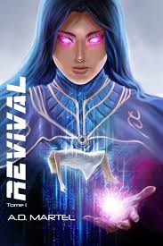

Revival T1 : L'Appel du Chaos
Auteur : A. D. Martel
Date de publication : 19 janvier 2022
Genre : Science-fiction, Thriller, Horreur
Nombre de pages : 340
Éditeur : Auto-édition
Format : Disponible en version papier et numérique
Prix moyen : Environ 18 € en version papier
Adaptations : Non
Résumé
Dans un futur proche, la Terre est en pleine déliquescence, minée par des crises climatiques et économiques. Des scientifiques ont réussi à percer les secrets de la réanimation des morts et à les ramener à la vie dans un état encore plus puissant. Mais cette technologie a des conséquences terribles. Alors que la société est rongée par la peur et la révolte, un groupe d'individus se retrouve impliqué dans un projet gouvernemental secret : le Revival, un programme qui vise à recréer les morts pour qu'ils deviennent des armes au service de la guerre. Alors que la frontière entre l'humanité et la monstruosité se brouille, un ancien soldat se retrouve pris dans un tourbillon de complots et de secrets qu'il n'aurait jamais imaginés.
Structure et style
Le roman est écrit à la première personne du point de vue de plusieurs personnages, offrant ainsi une immersion variée dans l'univers. A. D. Martel mêle une narration tendue et introspective à des scènes d’action intenses, créant une atmosphère sombre et oppressante. Le style est direct, avec une prose efficace qui plonge le lecteur dans un climat de peur et de paranoïa. Les descriptions sont parfois brutales, mais parfaitement adaptées à l’ambiance dystopique du récit.
Analyse sans spoilers – Pourquoi lire Revival T1 : L'Appel du Chaos ?
1. Une exploration intense des dérives de la science
Le roman interroge les conséquences des avancées scientifiques, notamment la réanimation des morts, et la manière dont l’humanité pourrait manipuler ces technologies à des fins militaires. C’est une réflexion sur les limites de l’éthique et sur ce qui fait de nous des êtres humains.
2. Un thriller haletant et captivant
L’intrigue est rythmée par des rebondissements qui tiennent le lecteur en haleine. L’aspect thriller est renforcé par un suspense permanent, où chaque décision peut avoir des conséquences fatales.
3. Des personnages en quête de rédemption et de vérité
Les personnages sont profonds, complexes et souvent en proie à des dilemmes moraux. Leurs luttes intérieures entre le devoir, la survie et la recherche de vérité apportent une dimension psychologique intéressante au récit.
Thèmes abordés
Technologie et éthique : La réanimation des morts et la manipulation de la science pour des fins militaires soulèvent des questions sur l’utilisation des découvertes scientifiques à des fins inhumaines.
Mort et résurrection : Le roman interroge la notion de vie après la mort et la transformation de l’humain en une arme.
Survie et rédemption : Les personnages luttent pour leur survie dans un monde qui a sombré dans le chaos, cherchant souvent une forme de rédemption face à leurs choix passés.
Pour qui est ce livre ?
Ce livre est idéal pour les amateurs de science-fiction, de thrillers dystopiques et d’histoires qui mélangent horreur et technologies futures. Les lecteurs appréciant les récits sombres, pleins de suspense et de dilemmes moraux seront particulièrement séduits.
Citation
"Chaque génération croit qu'elle détient la vérité, mais la vérité n'est jamais aussi simple."